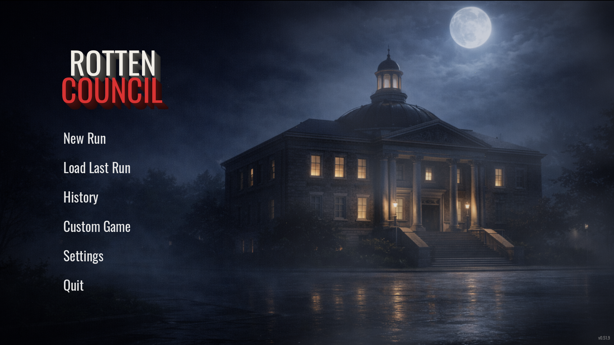
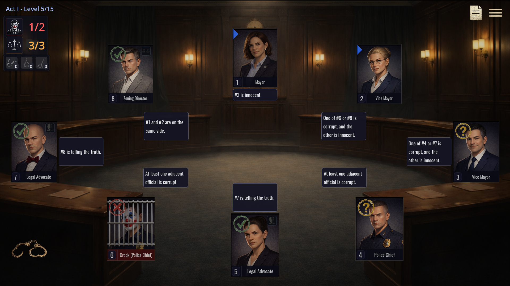
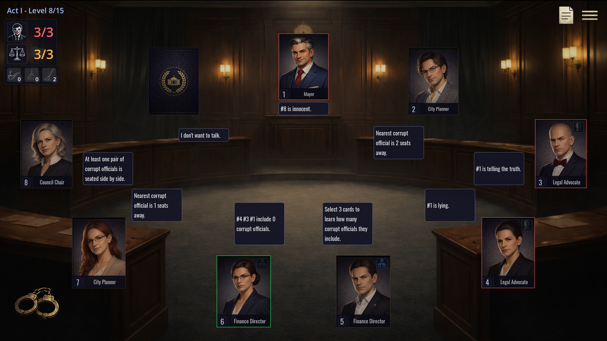
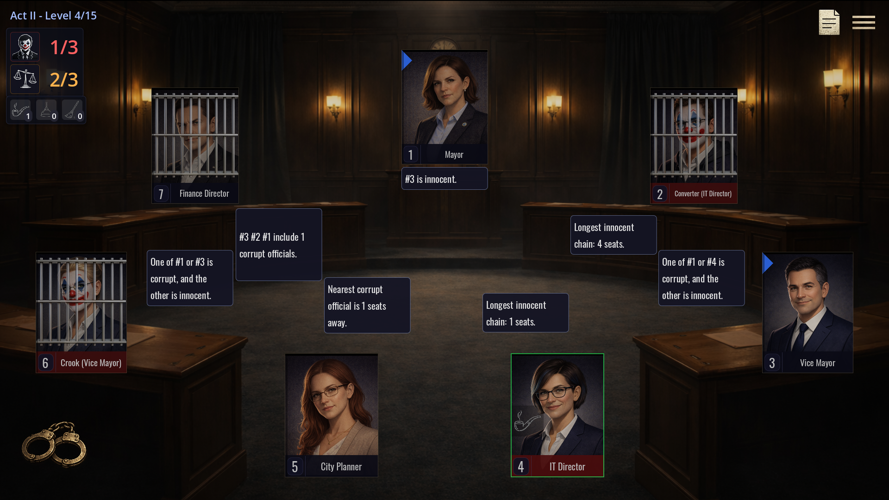
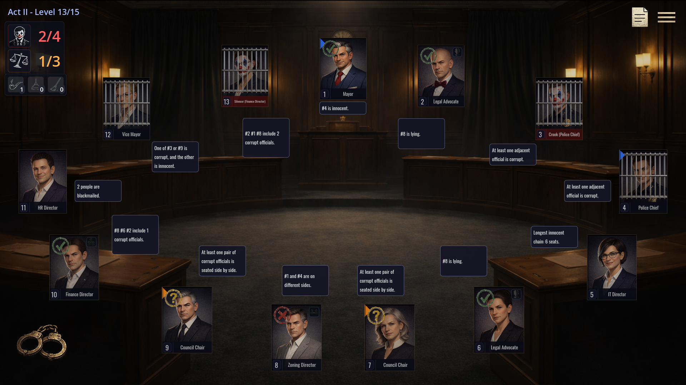
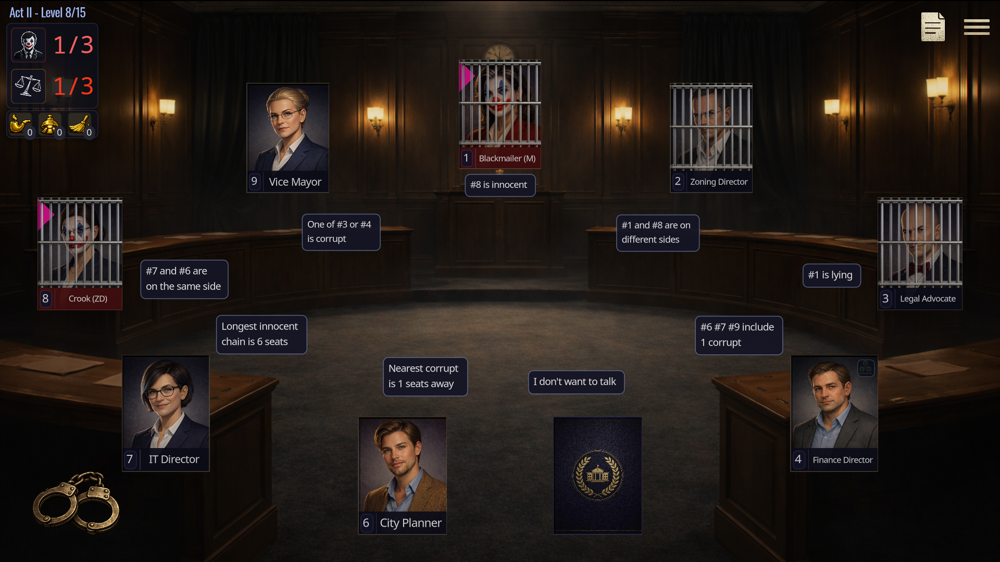

Mayor
The only face you can trust. Sits at the head of the table and vouches for one official. But is that trust deserved?
A single-player social deduction puzzle game
Analyze statements · Cross-reference clues · Arrest the corrupt
See the chamber in action






Uncover the corruption in four steps
A single-player social deduction puzzle solved through logic alone.
Each official makes a statement. Some tell the truth. Some don't. Read carefully.
Cross-reference statements against each other. If two claims contradict, someone is lying.
Use abilities and hired professionals to test your theory. Mark suspects with stamps and ribbons.
Find every corrupt official. Three wrong arrests and you lose. Arrest the Mayor by mistake and it's over instantly.
15 unique roles. Each with a statement, an agenda and something to hide.
Every role speaks. Not every role tells the truth.
The only face you can trust. Sits at the head of the table and vouches for one official. But is that trust deserved?
Points at someone and asks: are you lying? One question. One answer. Use it wisely.
Knows whether the corrupt are sitting together or scattered. A single yes-or-no that changes everything.
Feels the tension next door. Tells you if corruption is sitting right beside them.
...and 6 more innocent roles to discover in-game.
Corrupt officials disguise themselves as innocent roles. Some blackmail, some silence, some convert loyalties. Every lie is a clue if you know where to look.
Werewolf, Mafia, Among Us, Town of Salem, Feign, Blood on the Clocktower. Social deduction has always been about reading people. A group sits in a circle, someone is lying and everyone argues about who.
We wanted to ask a different question: what if you could strip all of that away and leave only the logic?
Rotten Chamber is what happened. A solo social deduction puzzle game where every statement follows rules, every lie leaves a trace and every puzzle has exactly one solution. No dice. No chance. No other players needed.
What makes Rotten Chamber unique
A logic puzzle game built on deduction, not luck.
No dice rolls. No card draws. Every logic puzzle is solvable through deduction alone. If you got it wrong, you missed something.
45 levels across three acts. New roles and corrupt abilities unlock as you advance. Lose a level and your entire run is over.
Choose the chamber size, the number of corrupt officials, the difficulty and which roles appear. Build exactly the puzzle you want.
Earn rare specialists between levels. Deploy them as one-shot abilities: interrogate a suspect, reveal an alignment or reset a used power.
Mark cards with stamps (innocent, corrupt, suspicious) and color ribbons to track your deductions as clues build up.
A guided tutorial walks you through reading statements, using abilities and making your first arrest. Learn by doing, not by reading.
Common questions about this social deduction puzzle game
A social deduction game is a genre where players must figure out who among them is lying or hiding their true role. Traditionally multiplayer, Rotten Chamber reimagines this as a single-player logic puzzle where you analyze statements and cross-reference clues to identify the corrupt.
Yes. Rotten Chamber is a solo social deduction game designed from the ground up for a single player. Instead of reading other players, you read role-based statements and use pure logic to deduce who is corrupt.
Most social deduction games like Werewolf, Mafia or Among Us require a group. Rotten Chamber removes the social element and replaces it with a logic puzzle: every statement follows deterministic rules, every level is solvable through deduction alone and there is no randomness in the outcome.
Each official around a circular table makes a statement based on their role. Innocent officials tell the truth while corrupt officials lie. You cross-reference these statements, use active abilities to test your theories and arrest those you believe are corrupt. Three wrong arrests and you lose.
No. Rotten Chamber is purely single-player. The game features 45 campaign levels across three acts, custom game modes and an interactive tutorial, all designed for solo play.
Yes. Rotten Chamber has a Steam store page. Add it to your wishlist to get notified when the social deduction puzzle game launches.